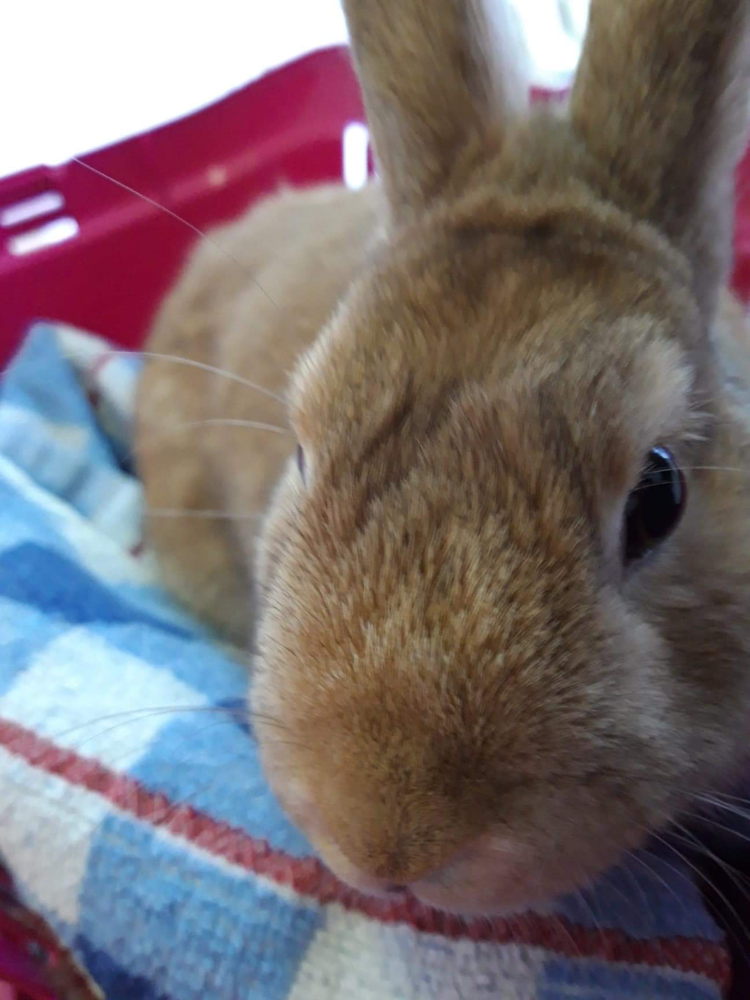

First animal was a guinea-pig, his name was Göbgöb Csucsubeetle Cuteface
Hobby Bunnies:
- First was Top Hat
- Second is the current Bonnie

Other animals you can reach
© 2020
Archaeolaginae
Az †Archaeolaginae alcsaládba 22 kihalt nem tartozik:
- †Archaeolagus Dice, 1917
- †Hypolagus Dice, 1917
- †Notolagus Wilson, 1938
- †Panolax Cope, 1874
- †Agispelagus Argyropulo, 1939
- †Aluralagus Downey, 1968
- †Austrolagomys Stromer, 1926
- †Aztlanolagus Russell & Harris, 1986
- †Chadrolagus Gawne, 1978
- †Coelogenys Illiger, 1811
- †Gobiolagus Burke, 1941
- †Lagotherium Pictet, 1853
- †Lepoides White, 1988
- †Nekrolagus Hibbard, 1939
- †Ordolagus de Muizon, 1977
- †Paranotolagus Miller & Carranza-Castaneda, 1982
- White, 1984
- †Pliopentalagus Gureev & Konkova, 1964
- †Pronotolagus White, 1991
- †Tachylagus Storer, 1992
- †Trischizolagus Radulesco & Samson, 1967
- †Veterilepus Radulesco & Samson, 1967
- †Litolagus Dawson, 1958
- †Megalagus Walker, 1931
- †Mytonolagus Burke, 1934
- †Palaeolagus Leidy, 1856
- Valódi nyulak
- (Miller, 1900) – 1 faj
- észak-amerikai törpenyúl (Brachylagus idahoensis)
- Bunolagus (Thomas, 1929) – 1 faj
- dél-afrikai folyaminyúl (Bunolagus monticularis)
- Caprolagus (Blyth, 1845) – 1 faj
- sörtés nyúl (Caprolagus hispidus)
- Lepus (Linnaeus, 1758) – 32 faj
- Macrotolagus alnem, 1 faj
- Allen-szamárnyúl (Lepus alleni)
- Poecilolagus alnem, 1 faj
- hócipős nyúl (Lepus americanus)
- Lepus alnem, 3 faj
- sarki nyúl (Lepus arcticus)
- tundranyúl (Lepus othus)
- havasi nyúl (Lepus timidus)
- kaliforniai szamárnyúl (Lepus californicus)
- fehérfarkú nyúl (Lepus callotis)